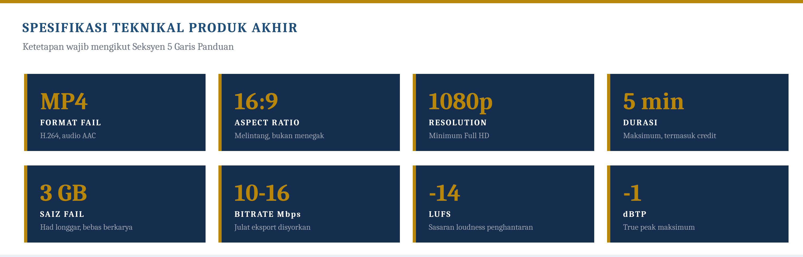
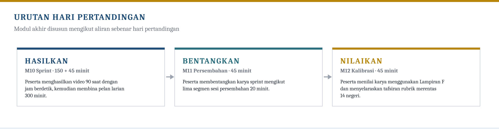
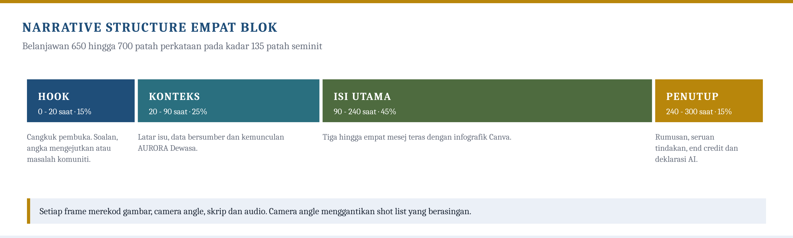
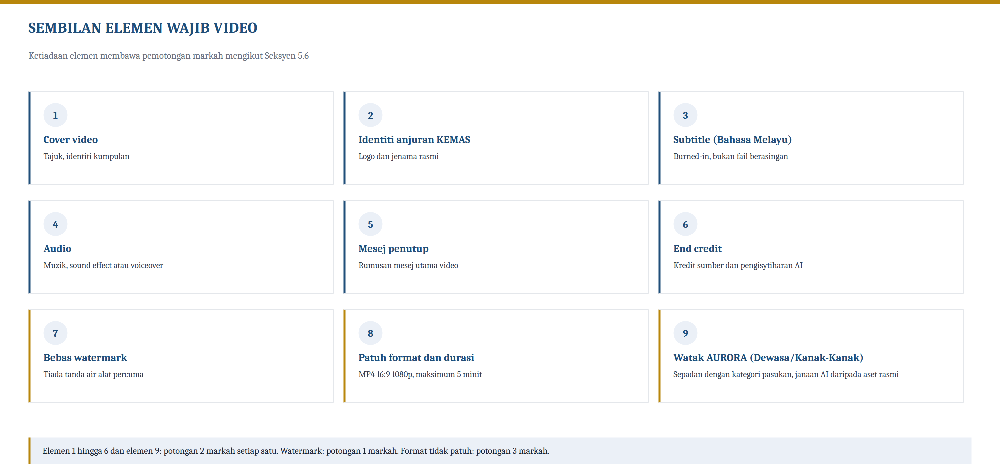
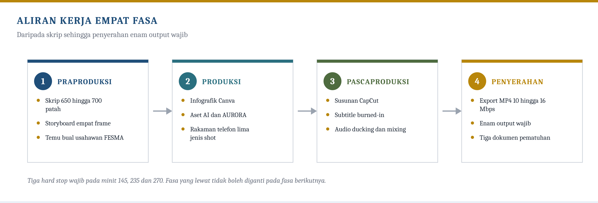
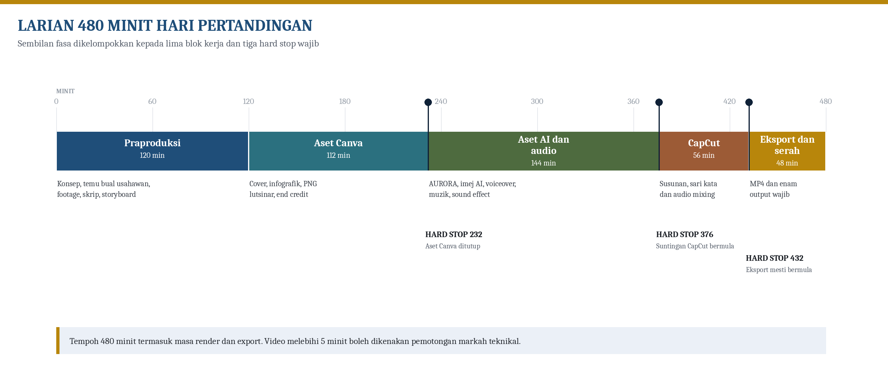
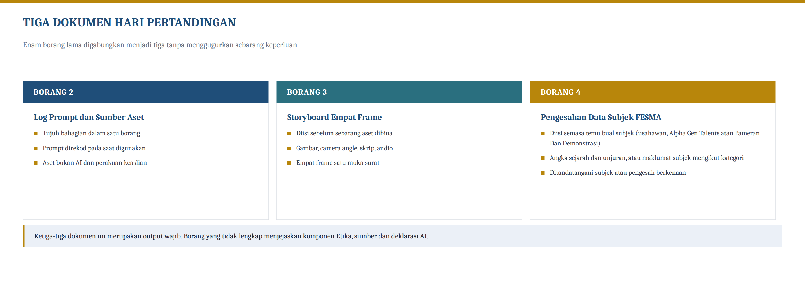
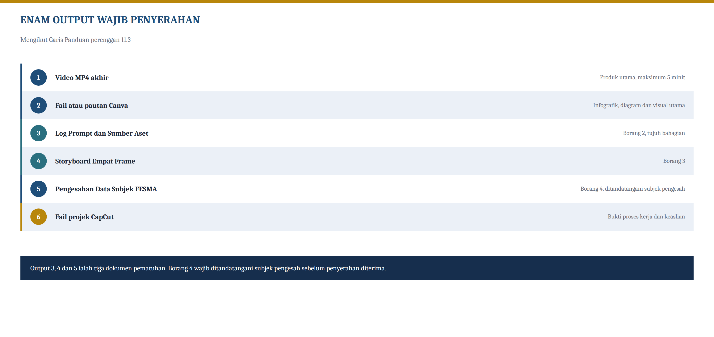
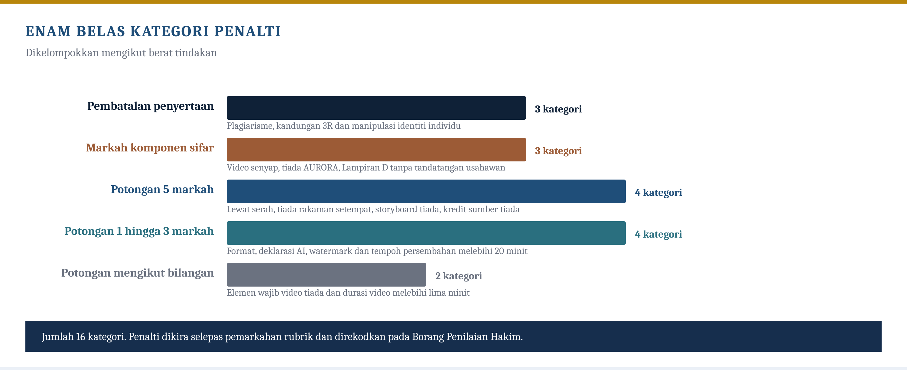

Garis Panduan
KEMAS @FESMA Tahun 2026
KEMENTERIAN KEMAJUAN DESA DAN WILAYAH (KKDW)
Pengarah KEMAS Negeri Sarawak
Angka utama
RUJUKAN PANTAS · RINGKASAN KETETAPAN UTAMA
Butiran penuh setiap ketetapan dinyatakan dalam seksyen yang berkenaan.
Jadual berikut merumuskan ketetapan utama pertandingan. Butiran penuh setiap ketetapan dinyatakan dalam seksyen yang berkenaan.
| Komponen | Ketetapan Utama |
|---|---|
| Produk akhir | Video infografik digital dalam format MP4 |
| Durasi video | Maksimum lima (5) minit |
| Sesi persembahan | Maksimum dua puluh (20) minit |
| Canva | Infografik, diagram, carta, teks dan bahan visual utama |
| AI | Watak, karakter, avatar, environment, idea visual dan elemen kreatif |
| CapCut | Post-production, transition, subtitle dan export MP4 |
| Audio | Lagu, background music, sound effects dan voiceover AI (text-to-speech) |
| Resolusi | Minimum 1080p Full HD, nisbah 16:9 landscape |
| Elemen wajib video | Cover, identiti anjuran KEMAS, subtitle, audio, mesej penutup, end credit, bebas watermark, pematuhan format dan durasi, watak AURORA yang sepadan dengan kategori pasukan |

PENUTUP · RUJUKAN PANTAS HARI PERTANDINGAN
Dua rajah berikut merumuskan keseluruhan hari pertandingan dalam satu muka surat.


GARIS PANDUAN CDKK 2026 · ISI KANDUNGAN
22 seksyen utama. Garis Panduan ini hendaklah dibaca bersama Nota Kursus Bengkel CDKK 2026. Nota Kursus ialah dokumen rujukan muktamad, dan sekiranya berlaku sebarang percanggahan antara Garis Panduan ini dengan Nota Kursus, Nota Kursus yang terpakai.
- 1PendahuluanPertandingan
- 2Nama dan Kategori PertandinganPertandingan
- 3ObjektifPertandingan
- 4Syarat PenyertaanPertandingan
- 5Format Produk AkhirProduk
- 6Penggunaan Aplikasi dan Aliran Kerja DigitalProduk
- 7Tempoh Penghasilan dan Sesi PersembahanProduk
- 8Tema dan Tajuk PertandinganProduk
- 9Peraturan Penggunaan AIPeraturan
- 10Hak Cipta, Sumber dan Etika KandunganPeraturan
- 11Kaedah Penyerahan ProjekPeraturan
- 12Pertandingan Peringkat Negeri dan KebangsaanPeraturan
- 12AKriteria PemarkahanPenilaian
- 13Skala Penilaian HakimPenilaian
- 14Penilaian Juri AwamPenilaian
- 15HakimPenilaian
- 16Penalti dan Pembatalan PenyertaanPenalti dan seri
- 17Keputusan SeriPenalti dan seri
- 18Tanggungjawab PenganjurTanggungjawab
- 19Tanggungjawab PesertaTanggungjawab
- 20Peraturan Am, Kontingensi dan PerundanganTanggungjawab
- 21PenutupTanggungjawab
PENDAHULUAN
NAMA DAN KATEGORI PERTANDINGAN
| Perkara | Ketetapan |
|---|---|
| Nama rasmi | Pertandingan Cabaran Digital Kreatif Komuniti (CDKK) KEMAS @FESMA Peringkat Negeri dan Kebangsaan Tahun 2026 |
| Kategori pertandingan | Video Infografik Digital Komuniti |
| Produk akhir | Video digital hasil compositing visual asset Canva, AI creative asset dan post-production CapCut |
OBJEKTIF
SYARAT PENYERTAAN
FORMAT PRODUK AKHIR
| Spesifikasi | Ketetapan Wajib |
|---|---|
| Format Fail (File Compression) | MP4 (codec video H.264) |
| Nisbah Paparan (Aspect Ratio) | 16:9, landscape atau melintang |
| Resolusi Minimum (Resolution) | 1080p Full HD (1920 x 1080) |
| Kadar Bingkai (Framerate) | 24, 25 atau 30 bingkai sesaat (fps) |
| Saiz Fail Maksimum | 3 GB |
| Durasi Video (Duration) | Maksimum lima (5) minit |
| Bahasa Utama | Bahasa Melayu |
| Sari kata (Subtitle) | Subtitle terbuka (burned-in) dalam Bahasa Melayu; subtitle Bahasa Inggeris digalakkan (pilihan) |
| Elemen Audio | Lagu/background music, sound effects dan voiceover (boleh termasuk text-to-speech AI), tertakluk kepada syarat hak cipta |
| Kandungan Wajib | Tajuk, mesej utama, isi kandungan, rumusan dan kredit sumber |
| Sumber | Semua bahan pihak ketiga, AI, audio, visual dan fakta perlu dikreditkan |

| Bil. | Elemen Wajib | Keterangan |
|---|---|---|
| 1 | Cover Video (Skrin Pembuka) | Paparan tajuk projek, tema serta identiti kumpulan dan negeri pada permulaan video. Identiti kumpulan dipaparkan menerusi logo pasukan yang didaftarkan dalam Brand Kit (Borang 7), diletakkan bersebelahan identiti anjuran KEMAS |
| 2 | Identiti Anjuran KEMAS | Logo atau teks “Anjuran KEMAS” dipaparkan pada cover atau end credit. Penganjur tidak membekalkan fail logo KEMAS; peserta bertanggungjawab memperolehnya daripada sumber rasmi dan teks “Anjuran KEMAS” dibenarkan sebagai ganti sekiranya logo bermutu tinggi tidak diperoleh |
| 3 | Subtitle (Bahasa Melayu) | Subtitle terbuka (burned-in) sepanjang naratif video bagi tujuan kebolehcapaian |
| 4 | Sekurang-kurangnya Satu Elemen Audio | Background music, sound effects atau voiceover; video tidak boleh senyap |
| 5 | Mesej Penutup / Rumusan | Kesimpulan atau seruan tindakan (call-to-action) sebelum end credit |
| 6 | End Credit | Kredit penghasilan (logo pasukan, nama kumpulan dan ahli), kredit sumber (muzik, imej, fakta) dan pengisytiharan penggunaan AI |
| 7 | Bebas Watermark | Tiada watermark aplikasi pihak ketiga (cth. Canva/CapCut percubaan) pada video akhir |
| 8 | Pematuhan Format Dan Durasi | MP4, 16:9, 1080p, durasi maksimum 5 minit |
| 9 | Watak AURORA | Watak AURORA yang sepadan dengan kategori pasukan WAJIB muncul dalam video dengan peranan bermakna. Pasukan kategori Usahawan dan Pameran Dan Demonstrasi menjana AURORA Dewasa, iaitu wanita berusia 20-an peserta Kelas Kemahiran KEMAS yang memakai tudung, manakala pasukan kategori Alpha Gen Talents menjana AURORA Kanak-Kanak, iaitu kanak-kanak perempuan peserta TABIKA KEMAS. Rupa dijana menggunakan teknologi AI berdasarkan aset rujukan rasmi / soul pack yang dibekalkan penganjur (pek aset AURORA). |
PENGGUNAAN APLIKASI DAN ALIRAN KERJA DIGITAL

| Aplikasi | Peranan Utama | Output Yang Diharapkan |
|---|---|---|
| Canva | Membina infografik, diagram, chart, text dan visual utama | Visual asset / slide / graphic element |
| AI | Mencipta character, avatar, environment dan elemen kreatif | Image, avatar, background, script, voiceover atau visual idea |
| Peranti rakaman (telefon pintar / kamera video / kamera digital) | Merakam aktiviti sebenar (kemahiran atau FESMA) sebagai footage | Footage video sebenar untuk di-composite dalam CapCut |
| CapCut | Menyunting dan composite semua media asset | Video akhir MP4 maksimum 5 minit |
| Audio / Suara AI | Lagu, background music, sound effects dan voiceover (TTS) | Audio track yang di-mix dalam CapCut |
TEMPOH PENGHASILAN DAN SESI PERSEMBAHAN

| Komponen Persembahan | Tempoh Maksimum |
|---|---|
| Pengenalan kumpulan dan konsep projek | 2 minit |
| Tayangan video akhir | 5 minit |
| Penerangan proses penggunaan Canva, AI dan CapCut | 5 minit |
| Penerangan mesej, fakta, reka bentuk dan impak projek | 3 minit |
| Soal jawab bersama panel hakim | 5 minit |
| Jumlah | 20 minit |
TEMA DAN TAJUK PERTANDINGAN
PERATURAN PENGGUNAAN AI
HAK CIPTA, SUMBER DAN ETIKA KANDUNGAN

KAEDAH PENYERAHAN PROJEK

| Bil. | Output Wajib |
|---|---|
| 1 | Satu (1) video akhir dalam format MP4 berdurasi maksimum lima (5) minit |
| 2 | Fail atau link Canva yang mengandungi bahan infografik, diagram dan visual utama |
| 3 | Borang Log Prompt dan Sumber Aset yang lengkap (Borang 2), merangkumi senarai aplikasi AI, log prompt penuh, senarai aset bukan AI dan perakuan keaslian karya |
| 4 | Storyboard yang lengkap menggunakan Templat Storyboard Empat Frame (Borang 3) |
| 5 | Borang Pengesahan Data yang ditandatangani subjek pengesah (Borang 4, varian 4A/4B/4C mengikut kategori pasukan) |
| 6 | Fail projek CapCut yang digunakan bagi menghasilkan video akhir (untuk pengesahan keaslian) |
PERTANDINGAN PERINGKAT NEGERI DAN KEBANGSAAN
KRITERIA PEMARKAHAN
Pemarkahan keseluruhan adalah 100 markah dan terpakai bagi kedua-dua peringkat Negeri dan Kebangsaan. Rubrik ini disusun supaya selari dengan format pertandingan yang menggunakan Canva sebagai platform reka bentuk visual, AI sebagai sokongan penciptaan aset kreatif, elemen audio (lagu, background music, sound effects dan suara) sebagai komponen penghasilan dan CapCut sebagai platform penyuntingan akhir. Deskriptor penilaian bagi setiap komponen disertakan dalam Lampiran 6 Nota Kursus.
| Komponen | Aspek Dinilai | Markah |
|---|---|---|
| Kreativiti konsep dan visual | Keaslian idea, creative approach, kesesuaian konsep, visual appeal, keselarasan tema serta konsistensi Brand Kit Pasukan merentas keseluruhan video | 20 |
| Kandungan, fakta dan mesej | Kejelasan mesej, ketepatan angka atau data subjek rakaman mengikut kategori pasukan yang disahkan oleh subjek pengesah, kemunasabahan sasaran, narrative structure dan impak kepada komuniti | 15 |
| Penggunaan Canva | Kualiti infografik, diagram, chart, layout, typography, colour dan visual asset utama, termasuk mutu reka bentuk logo pasukan dan keharmonian palet warna Brand Kit | 15 |
| Penggunaan AI | Kualiti character, avatar, environment dan visual idea janaan AI | 10 |
| Suntingan CapCut dan video | Clip sequencing, transition, motion graphics, subtitle, format MP4 dan durasi maksimum 5 minit | 10 |
| Audio: lagu, muzik, sound effects dan suara | Pemilihan dan kesesuaian lagu/background music, sound effects (SFX), kejelasan voiceover/TTS dan audio balancing | 10 |
| Etika, sumber dan deklarasi AI | Keaslian karya, source credit, hak cipta, bebas 3R dan AI declaration yang lengkap | 5 |
| Persembahan dan soal jawab | Penyampaian, keyakinan, penerangan proses kerja, kefahaman konsep dan jawapan kepada soalan hakim | 10 |
| Watak AURORA | Kehadiran dan integrasi watak AURORA yang sepadan dengan kategori pasukan (AURORA Dewasa atau AURORA Kanak-Kanak) dalam video, dijana menggunakan AI, merangkumi kualiti visual, kesesuaian penampilan dan kebermaknaan peranan dalam naratif; markah 3 hingga 5 dikhaskan bagi AURORA yang dianimasikan sebagai klip video, manakala imej pegun sahaja terhad pada 2 markah | 5 |
| Jumlah | 100 |
SKALA PENILAIAN HAKIM
| Tahap | Julat Prestasi | Takrif Ringkas |
|---|---|---|
| Cemerlang | 80 - 100% | Sangat jelas, profesional, kreatif, fakta sahih, teknikal lancar dan persembahan meyakinkan |
| Baik | 60 - 79% | Jelas dan kemas, tetapi masih terdapat kelemahan kecil pada reka bentuk, teknikal, fakta atau persembahan |
| Sederhana | 40 - 59% | Idea wujud tetapi penyampaian kurang tersusun, visual sederhana, fakta kurang kuat atau teknikal kurang kemas |
| Lemah | Bawah 40% | Tidak lengkap, tidak memenuhi tema, banyak kesilapan fakta, teknikal lemah atau melanggar syarat utama |
PENILAIAN JURI AWAM
HAKIM TETAP
PENALTI DAN PEMBATALAN PENYERTAAN

| Kesalahan / Isu | Tindakan / Kadar Pemotongan | |
|---|---|---|
| Lewat menghantar projek (dalam tetingkap masa) | Tolak 5 markah keseluruhan | |
| Video melebihi durasi 5 minit | Tolak 2 markah bagi setiap 30 saat lebihan (maksimum 6 markah) | |
| Format video tidak mematuhi MP4 (H.264), 16:9 atau 1080p | Tolak 3 markah teknikal | |
| Setiap elemen wajib video yang tiada (cover, identiti anjuran KEMAS, subtitle, audio, watak AURORA yang sepadan dengan kategori pasukan, mesej penutup, end credit) | Tolak 2 markah bagi setiap elemen yang tiada | |
| Terdapat watermark aplikasi pihak ketiga pada video | Tolak 1 markah teknikal | |
| Video tiada sebarang elemen audio (senyap) | Markah komponen Audio = 0 | |
| Video tiada watak AURORA yang sepadan dengan kategori pasukan langsung | Markah komponen AURORA = 0 | |
| Video tiada elemen rakaman aktiviti setempat (bagi peringkat Kebangsaan: aktiviti FESMA; bagi peringkat Negeri: aktiviti atau lokasi setempat yang berkaitan) | Tolak 5 markah | |
| Tiada senarai sumber atau kredit aset | Tolak markah komponen Etika (maksimum 5) | |
| Tiada deklarasi penggunaan AI | Tolak 3 markah etika; boleh dibatalkan jika serius | |
| Storyboard (Borang 3) tidak diserahkan | Tolak 5 markah keseluruhan | |
| Borang Pengesahan Data (Borang 4, varian mengikut kategori pasukan) tidak diserahkan atau tidak lengkap ditandatangani/diperakui | Markah komponen Kandungan, Fakta dan Mesej = 0 | |
| Melebihi tempoh persembahan 20 minit | Amaran; tolak 2 markah komponen Persembahan | |
| Plagiarisme serius atau karya siap sebelum pertandingan | Pembatalan penyertaan | |
| Kandungan lucah, fitnah, ekstrem atau menyentuh sensitiviti 3R | Pembatalan penyertaan | |
| Manipulasi wajah, suara atau identiti individu sebenar tanpa kebenaran | Pembatalan penyertaan | |
| CATATAN PENALTI Kadar di atas ialah panduan piawai untuk ketekalan dan ketelusan. Jumlah pemotongan teknikal tertakluk kepada had markah komponen berkaitan dan disahkan oleh Ketua Hakim. | ||
KEPUTUSAN SERI
| Keutamaan | Komponen | Wajaran | Nombor komponen |
|---|---|---|---|
| 1 | Kreativiti konsep dan visual | 20 | 1 |
| 2 | Kandungan, fakta dan mesej | 15 | 2 |
| 3 | Penggunaan Canva | 15 | 3 |
| 4 | Penggunaan AI | 10 | 4 |
| 5 | Suntingan CapCut dan video | 10 | 5 |
| 6 | Audio: lagu, muzik, sound effects dan suara | 10 | 6 |
| 7 | Persembahan dan soal jawab | 10 | 8 |
| 8 | Etika, sumber dan deklarasi AI | 5 | 7 |
| 9 | Watak AURORA | 5 | 9 |
TANGGUNGJAWAB PENGANJUR
- Taklimat pertandingan
- Tajuk atau tema pertandingan
- Ruang pertandingan yang sesuai
- Bekalan elektrik dan sokongan teknikal asas
- Sambungan internet utama yang stabil
- Beberapa unit laptop sandaran (jika tersedia)
- Borang pemarkahan rasmi
- Borang deklarasi AI dan sumber
- Sistem penyerahan fail
- Jadual giliran persembahan
TANGGUNGJAWAB PESERTA
PERATURAN AM, KONTINGENSI DAN PERUNDANGAN
20.1Sambungan Internet dan Sokongan Teknikal
20.2Kontingensi Teknikal
Sekiranya berlaku gangguan teknikal dalam tempoh pertandingan, tindakan berikut terpakai:
| Situasi | Tindakan |
|---|---|
| Laptop peserta rosak | Peserta menggunakan unit sandaran penganjur (jika ada) ATAU diberi lanjutan masa setara tempoh gangguan (maksimum 30 minit) dengan kelulusan urus setia |
| Bekalan elektrik terputus | Jam pertandingan dihentikan; tempoh gangguan diganti kepada semua peserta terjejas |
| Talian internet terputus atau terganggu | Pasukan perlu menyediakan talian hotspot sendiri sementara urus setia memperbaiki talian utama |
| Fail rosak atau tidak dapat dieksport | Peserta menyimpan salinan sandaran (USB/cloud base) sepanjang sesi; urus setia membantu pemindahan fail jika perlu |
20.3Spesifikasi Minimum Peralatan (BYOD)
20.4Penambahbaikan dan Bantahan
20.5Force Majeure dan Pindaan Peraturan
PENUTUP
Dokumen rujukan yang berkaitan. Borang rasmi pertandingan iaitu Borang 1 hingga Borang 7 dimuatkan dalam dokumen berasingan, iaitu Borang Pertandingan CDKK KEMAS @FESMA Tahun 2026. Borang 4 mempunyai tiga varian mengikut kategori subjek, iaitu Borang 4A bagi Usahawan, Borang 4B bagi Alpha Gen Talents dan Borang 4C bagi Pameran Dan Demonstrasi.
Rubrik pemarkahan penuh empat aras bagi kesembilan-sembilan komponen dimuatkan dalam Lampiran 6 Nota Kursus Bengkel CDKK 2026, dan hendaklah dirujuk oleh panel hakim semasa mengisi Borang 5. Panduan aset watak AURORA pula dirujuk dalam Modul M5 Nota Kursus, meliputi kedua-dua varian iaitu AURORA Dewasa dan AURORA Kanak-Kanak.
Garis Panduan ini merumuskan peraturan pertandingan. Butiran pelaksanaan, kaedah kerja dan deskriptor penilaian yang lengkap dinyatakan dalam Nota Kursus Bengkel CDKK 2026, yang merupakan dokumen rujukan muktamad.